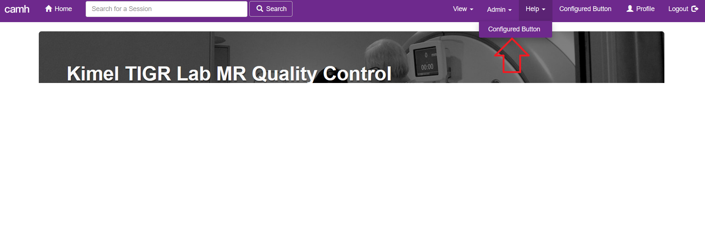

Menu Configuration¶
New items can be added to several of the dashboard’s menus. This page describes how to construct or edit a configuration file to use this feature.
Once your file has been created you can get the dashboard to read it by
setting the environment variable DASH_MENU_CONFIG to the full path to your
file.
Note
The dashboard must be restarted when this configuration is added or changed or new menu items will not appear.
File Format¶
The configuration file must be yaml format. Each button you want to add must have its own entry in the file. Below is an example of a correctly formatted file with two buttons, and an explanation of all required and optional fields that may be used.
Example¶
# Adds a button to the main navigation menu
my_nav_menu_btn:
menu: "nav_menu"
btn_text: "About Us"
url: "https://google.ca"
# Adds a button to the timepoint menu
my_tp_menu_btn:
menu: "timepoint"
btn_text: "Report Error"
url: "https://google.ca"
Required Fields¶
menu
Description: Specifies the menu that the button should be added to.
Accepted Values: timepoint, nav_menu, help
btn_text
Description: The text to display on the button. HTML entered here will NOT be rendered.
url
Description: The URL that the button should point to (i.e. the href value for the button).
Optional Fields¶
hover_text
Description: The text to display when users hover over the button.
Menu Types¶
timepoint¶
Adds a button to the menu on the upper right of the main timepoint page, as shown below.

help¶
Adds a button to the help drop down menu on the main navigational menu, as shown below.
